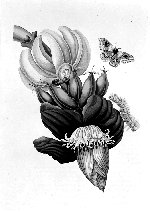

Maria Sibylla Merian, Metamorphosis insectorum Surinamensium, ofte Verandering der Surinaamsche insecten [...]. Amsterdam, voor de auteur, woonende in de Kerkstraat [...], al waar de zelve ook gedrukt en afgezet te bekoomen zyn; als ook by Gerard Valck, op den Dam, [..., 1705.] -- (Museum Boerhaave)
Nog steeds komen, als het om bloemenillustraties uit de zeventiende eeuw gaat, het eerst de namen van Judith Lijster en vooral van Maria Sibylla Merian in de gedachten. Hun werk heeft blijkbaar een zodanige kwaliteit dat iedereen er zich door aangesproken voelt en het onthoudt, wanneer hij het eenmaal gezien heeft.
Maria Sibylla Merian (1647-1717) werd geboren in Frankfurt als dochter van de bekende Matthäus Merian, de uitgever van het grote boek met stadsgezichten. Haar vader stierf drie jaar later en in 1651 hertrouwde haar moeder met de bloemenschilder Jacob Marell, die zijn stiefdochtertje in de grondbeginselen van het tekenen en schilderen onderwees. Op achttienjarige leeftijd trouwde Maria Sibylla met Johann Andreas Graff, eveneens bloemenschilder. Met hem woonde ze in Neurenberg, totdat ze hem in 1685 verliet. Ze was toen al een bekend kunstenares, want in 1675 had Joachim von Sandrart al lovend over haar geschreven. Haar werk was, dank zij de toenmalige grote liefde voor bloemen -- de ‘tulipomania’ (tulpen-gekte), waarbij vele duizenden guldens werden betaald voor één tulp, lag nog vers in het geheugen -- zeer gezocht. Van 1685 tot 1691 verbleef Maria Sibylla bij de Labadisten op Walta-State in Friesland, het eigendom van Cornelis van Aerssen, heer van Sommelsdijk, gouverneur en eigenaar van tweederde van Suriname. In het laatstgenoemde jaar verhuisde ze met haar toen drieëntwintig- en dertienjarige dochters naar Amsterdam, waar zij in haar levensonderhoud voorzag door de verkoop van haar werken en van geprepareerde dieren en opgezette vlinders. Van 1699 tot 1701 maakte ze een reis naar Suriname.
In 1675 was haar eerste publicatie verschenen, de eerste van de drie afleveringen met in totaal zesendertig gravures, Florum fasciculus primus [-tertius] of Neues Blumenbuch. De tweede aflevering verscheen in 1677 en de derde in 1680, samen met een herdruk van de eerste twee. De eerste twee afleveringen van haar boek met illustraties van rupsen, Der Raupen wunderbare Verwandelung und sonderbare Blumennahrung verschenen in 1679 en 1683; de derde kwam na haar dood uit. Elke aflevering bevat vijftig gravures. Het bekendst is ze echter gebleven door haar boek over de Surinaamse insekten met zestig (in latere edities tweeënzeventig) platen, de Metamorphosis insectorum Surinamensium, die in 1705 zowel in het Latijn als in het Nederlands verscheen. Niet alleen de insekten, waarbij vooral de vlinders opvallen, maar ook andere dieren en planten komen in dit werk aan bod.
Maria Sibylla heeft al vroeg ook door haarzelf ingekleurde exemplaren van haar prenten verkocht. Vaak gebruikte ze hiervoor contre-épreuves (zie nummer 89). Dit is ook het geval met het hier getoonde exemplaar. Uit een brief kennen we de verkoopsprijs: vijftien (later achttien) gulden voor een ongekleurd, en voor een door haar ‘afgezet’ exemplaar vijfenveertig gulden. Het boek ligt open bij de twaalfde prent, waarop de banaan is afgebeeld, een van de weinige gewassen die tegelijk bloeien en vrucht dragen. Maria Sibylla heeft de banaan gegeten en ze vond hem net zo lekker als in Holland een appel. Tenslotte deelt ze nog mee dat de bladen gebruikt worden als een soort bakplaten bij het broodbakken.
Literatuur
- J. Stuldreher-Nienhuis, Verborgen paradijzen. Het leven en de werken van Maria Sibylla Merian, 1647-1717. Arnhem 1944.
- Claus Nissen, Die botanische Buchillustration. Ihre Geschichte und Bibliographie. Stuttgart 1951-1966. 2 dln, p. 86, nr. 1340-1342, Suppl. p. 50.
- Elisabeth Rücker, Maria Sibylla Merian, 1647-1717. [Nürnberg] 1967.
| vorige pagina | top pagina |